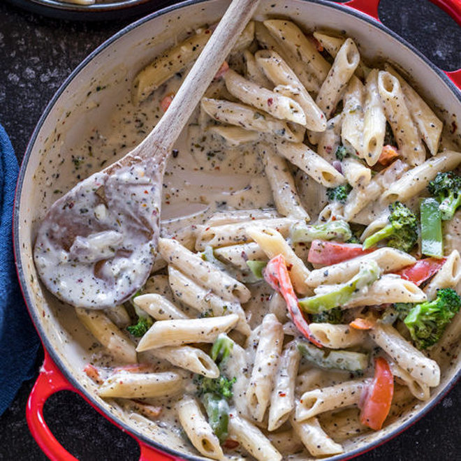

White Sauce Pasta

Description
There is no shot that im actually going to write 2 pargraphs about a random google search pasta
dish. But for what its worth, this is a white sauce pasta, it looks pretty good and
im pretty hungry because I've yet to eat anything today. The recipe is simple
as it consists of combining all our ingredients and spices into a pan before finally
throwing the penne in. As an added bonus, the cooking time is relatively short (~10 min).
The ingredients will be provided below.
Ingredients
- milk
- garlic
- cream
- flour
- cheese
- butter
- seasonings
- chili flakes
- veggies
- pasta
Steps
- Boil 150 grams of pasta according to instructions on the package. I used regular
penne pasta which was supposed to be boiled for 9 to 11 minutes. and drain.
Make sure you don't overcook your pasta, you want it al-dente. Note:
use only 1 cup pasta if you like more sauce in your pasta. While the pasta
is boiling chop all the veggies.
- Once the pasta is boiled, drain it using a colander and set aside.
- Melt 1 tablespoon of butter in a pan on medium heat. Add your favorite mixed veggies
like red onions, red peppers, broccoli florets and corn.
- Cook the veggies for 2 minutes. They should remain crunchy. You can use other veggies
like carrots, peas as well.
- Once done, remove veggies onto a plate and to another pan or you can use the same pan,
now add 1 tablespoon olive oil and the remaining tablespoon of butter.
- Once the butter melts, add the 5-6 chopped garlic cloves and cook for 1 minute until fragrant,
then add in 1 & 1/2 tablespoons of flour.
- Whisk the flour continuously, using a wire whisk for around 30 to 60 seconds. You don't have to brown the flour much.
Then add in 2 cups of milk. You can also add 1/4 cup heavy cream here or use additional 1/4 cup milk.
Mix everything using a whisk so that there are no lumps formed.
- Add in the seasonings:
1 teaspoon Italian seasonings
1 teaspoon dried oregano
1/2 teaspoon red chili flakes (to taste)
1/2 teaspoon salt, or to taste,
add black pepper to taste.
- Mix in everything and let the sauce simmer.
Sauce will thicken as it simmers and in 4 to 5 minutes it will coat
the back of the spoon. Turn heat to lowest.
Add in the veggies and the boiled pasta.
Toss until the pasta and veggies are coated with the sauce.
Taste test and adjust the seasonings at this point. Serve warm!